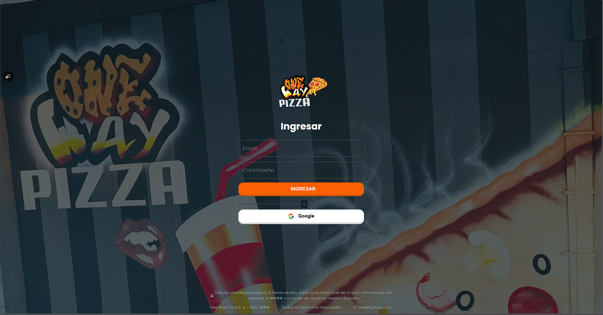
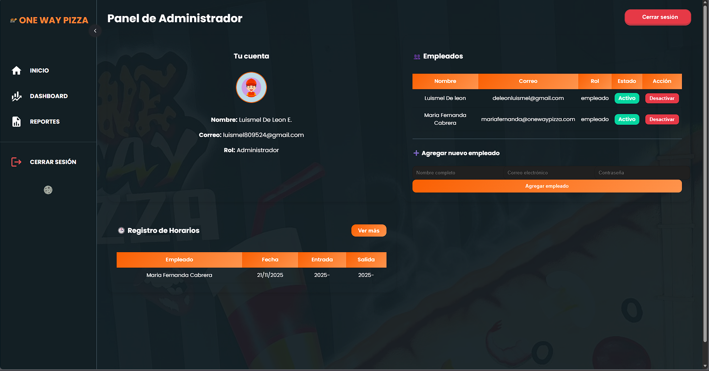
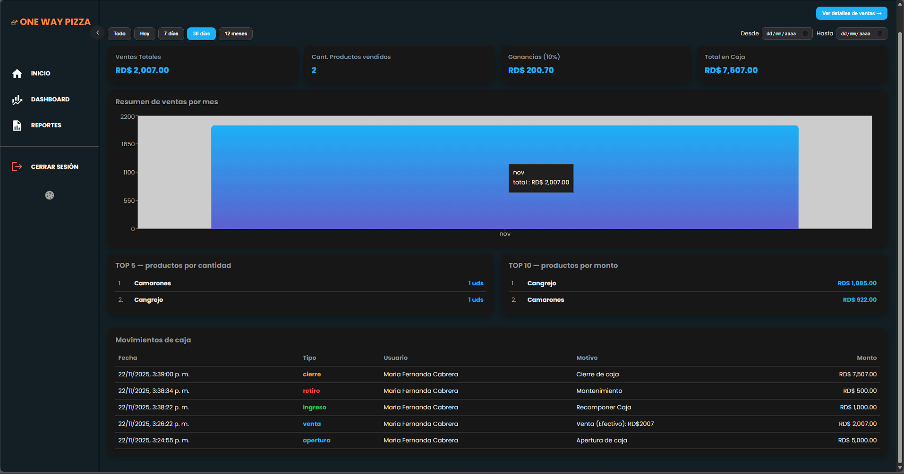
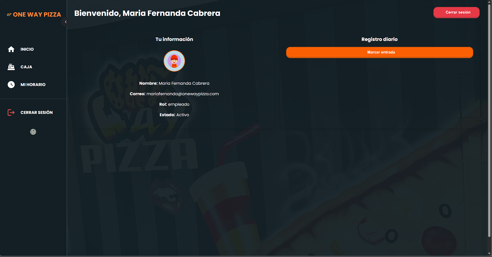
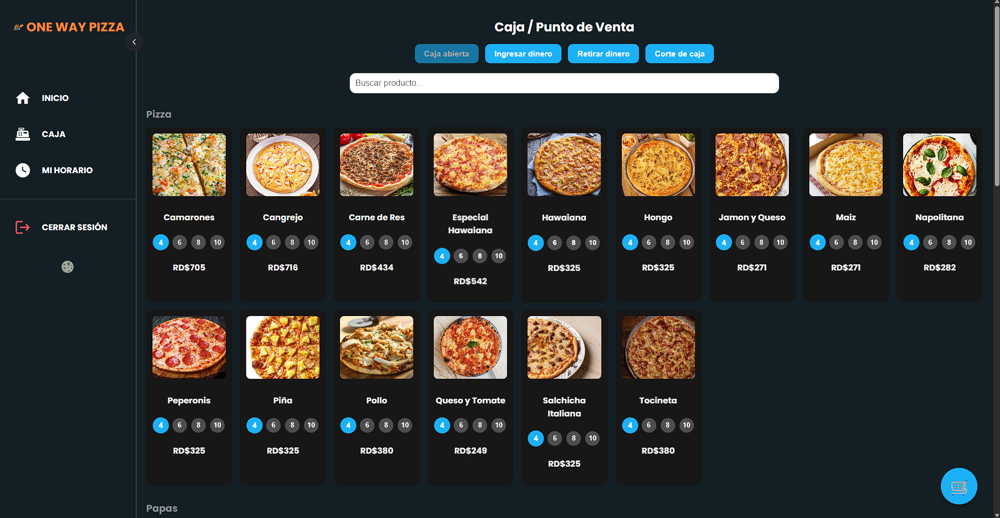

One Way Pizza – Plataforma de Ventas & KPIs





Aplicación web tipo punto de venta (POS) para un negocio de pizzas. Maneja pedidos, productos,
usuarios y flujo de caja, conectada a Supabase (PostgreSQL) como backend. A partir de los datos de
ventas, diseñé consultas y vistas para analizar ingresos, productos más vendidos y horarios de mayor
demanda.